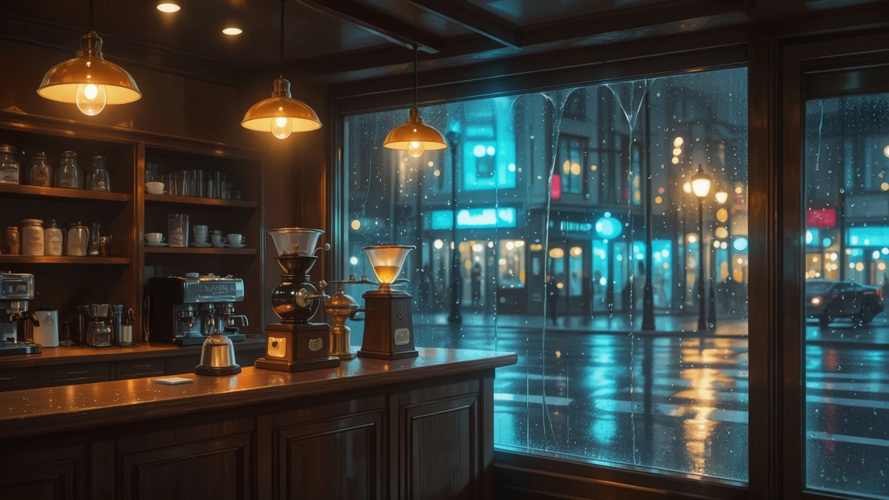

🌧️
窗外细雨 · 室内胡桃木暖意 98%

💭 思索点单中
☕
「今天学生会的预算案真是让人头疼……请给我一杯温热的、基底醇厚、带着一抹清雅茶香但绝不甜腻的饮品吧。」
📋 店长心事推理笔记
委托：《学生会长的雨夜静心茶》
HANDWRITTEN CHALKBOARD MENU
今日手冲与三步特调黑板
♨♨♨
当前调制：
未命名手冲基底
等待投料
基底 Base
未选择
主调 Primary
未选择
辅调 Secondary
未选择
顶料 Topping
未选择
☕ 精选基底 (Base · 必选1项)
点击触发磨豆或倾倒拟音
🍯 辅料风味与顶料装饰 (点击依次填入：主调 ▸ 辅调 ▸ 顶料，再次点击可移除)
已选 0 / 3 项
❄️ 萃取不足 (Under)
✨ 黄金萃取温区 (92°C · +25% 风味)
🔥 焦苦过萃 (Over)
10254055708595
▼
当前表压 / 节奏位置
0%
萃取判定结果
等待启动冲泡…
风味契合加成
+0%
美观度：0 分 · 待落笔
✨ 5款一键辅助拉花模具 (Stencils)
🖌️ 手绘奶泡笔触与酱料调色
拉花针粗细：